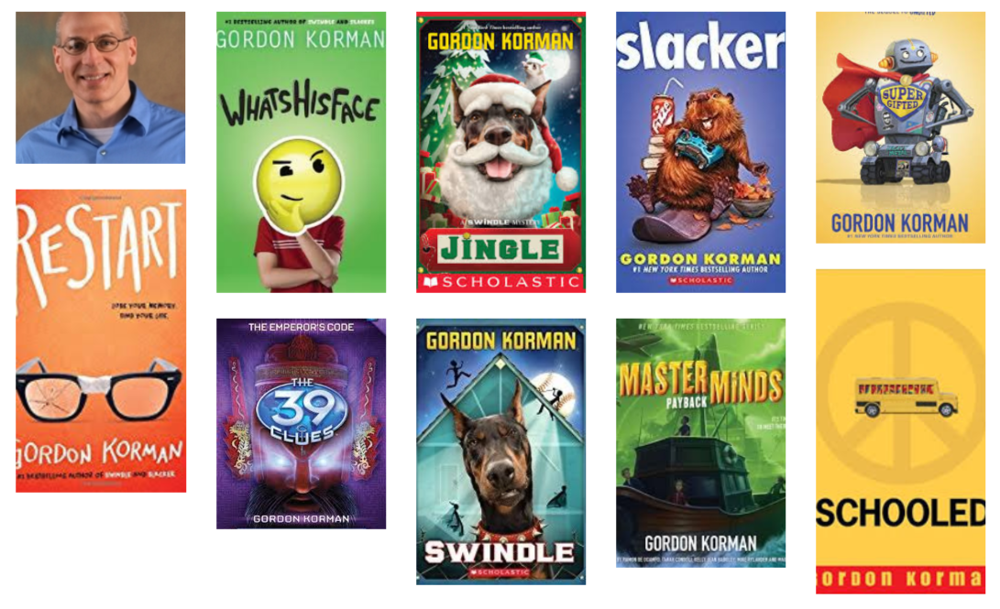
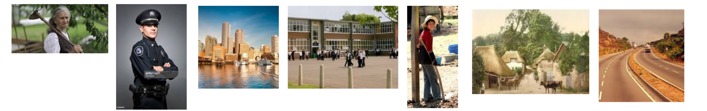

About the Book
Characters: There are many characters in the book here are the main once, Capricorn, Grandmother Rain, Police officer, Zach, Sophie, and other kids who usually bully Capricorn.
Setting: The setting in the story changes very quickly in the
begging the story starts in a in the farm of the village, then later they are on a highway bringing the rain to the hospital. later they live in the city where he attends school,and try and enjoy life.
Home Page
No TV! No Pizza! No Fun. That was the life of Capricorn. Capricorn was born in a secret community that almost no one new about. One day while he was working in the farm of the village, he heard a loud noise, CRACK! he rushed over there to see
his grandmother had fallen off a tree trying to pick peaches, and saw her injuries. Capricorn looked around to see there was any of the village people where there,but there was not any. His grandmother told him to get the doctor, so he went to get
him. His grandmother said not the village doctor, but a real doctor. Capricorn had to drive his grandmother to the city. on a highway a police officer had to stop him and asked him for his age, Capricorn answered with 13. read the book to find out
what happens to Capricorn, and his life in the city.
About the Author
Gordon Korman is the author of more than sixty books for kids and young adults, most recently Pop. His writing career began at the age of twelve when his seventh-grade English assignment became his first published novel.Now, thirty-three years later,
he is a full-time writer and speaker, with more than sixteen million copies of his novels in print. His books have been translated into French, Swedish, Danish, Spanish, Norwegian, Hebrew, Chinese, Japanese, Portuguese, Italian, Korean, Dutch, Greek,
and Thai.

About the Book
Characters: There are many characters in the book here are the main once, Capricorn, Grandmother Rain, Police officer, Zach, Sophie, and other kids who usually bully Capricorn.
Setting: The setting in the story changes very quickly in the
begging the story starts in a in the farm of the village, then later they are on a highway bringing the rain to the hospital. later they live in the city where he attends school,and try and enjoy life.
Why should I read this?
This is a very realistic book that pretty much explains what happens to some students in school. I do recommend children from ages five and up to read this book and find some of the difficulties of school. If you are a bully, how do you effect other people.
This book also contains some funny, and some emotional parts that you may laugh to or maybe tear up to. This book also may includes some tips that you may struggle in school that will help you,and that why I should all kids should read this book.
Pictures For The Book
